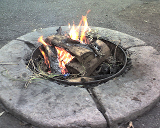

Recovered weblog entry
I have fire!

It only took 15 matches, but kevin and I did it. We're up at Mueller Park Canyon, enjoying the great weather. S'mores time!

Recovered weblog entry

It only took 15 matches, but kevin and I did it. We're up at Mueller Park Canyon, enjoying the great weather. S'mores time!